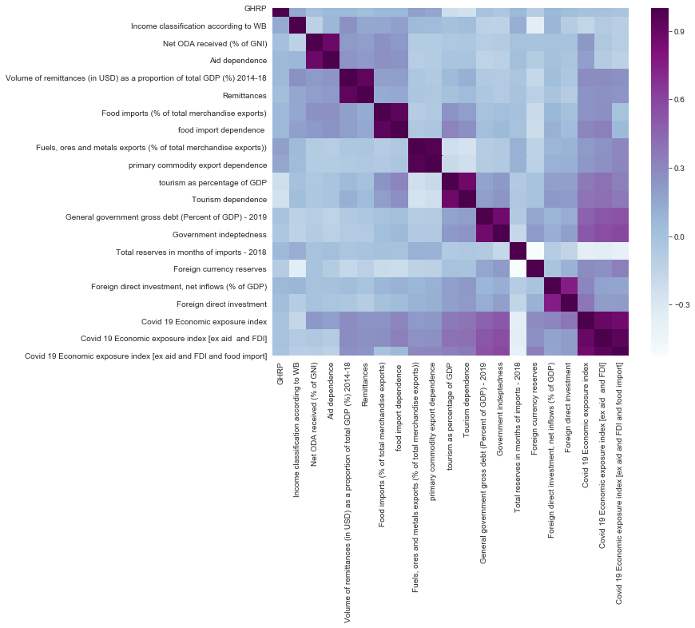
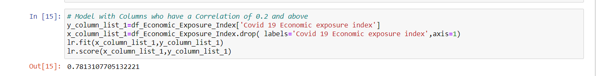
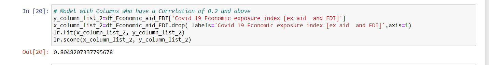
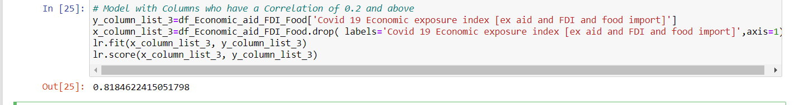

Globalization and the rapid integration of markets due the COVID-19 pandemic have a prominent effect on the EEI which aims to reflect the performance of the companies with significant exposure to specific regions or countries, regardless of their domicile.
Our project aims to train 3 models for -
1. COVID-19 EEI
2. COVID-19 EEI [ex aid and FDI]
3. COVID-19 [ex aid, FDI and Food imports]
We have used used correlation in order to select the columns to train the model and columns which had a correlation of 0.2 and above were used.
The correlated columns considered for this model are as follows:
'Remittances',
'Food imports (% of total merchandise exports)',
'food import dependence ',
'Fuels, ores and metals exports (% of total merchandise exports))',
'primary commodity export dependence', 'tourism as percentage of GDP',
'Tourism dependence',
'General government gross debt (Percent of GDP) - 2019',
'Government indebtedness', 'Total reserves in months of imports - 2018',
'Foreign currency reserves',
'Foreign direct investment, net inflows (% of GDP)','Foreign direct investment’
The correlated columns considered for this model are as follows:
'Volume of remittances (in USD) as a proportion of total GDP (%) 2014-18',
'Remittances',
'Food imports (% of total merchandise exports)',
'food import dependence ',
'Fuels, ores and metals exports (% of total merchandise exports))',
'primary commodity export dependence',
'tourism as percentage of GDP',
'Tourism dependence',
'General government gross debt (Percent of GDP) - 2019',
'Government indebtedness',
'Total reserves in months of imports - 2018',
'Foreign currency reserves',
'Foreign direct investment',' ‘Covid 19 Economic exposure index [ex aid and FDI]’
Accuracy of the model:
The correlated columns considered for this model are as follows:
'Volume of remittances (in USD) as a proportion of total GDP (%) 2014-18',
'Remittances',
'Food imports (% of total merchandise exports)',
'food import dependence ',
'Fuels, ores and metals exports (% of total merchandise exports))',
'primary commodity export dependence',
'tourism as percentage of GDP',
'Tourism dependence',
'General government gross debt (Percent of GDP) - 2019',
'Government indebtedness',
'Total reserves in months of imports - 2018',
'Foreign currency reserves',
'Foreign direct investment’,
‘Covid 19 Economic exposure index [ex aid and FDI and food import’
Accuracy of the model is as follows:
